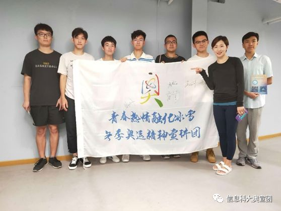
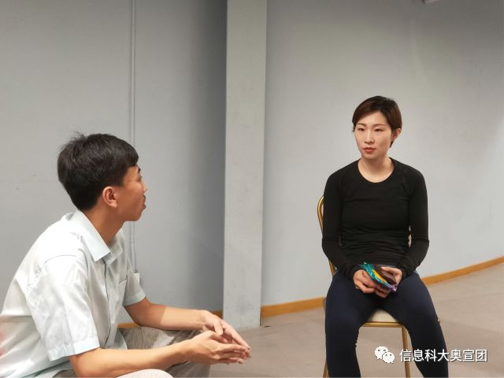
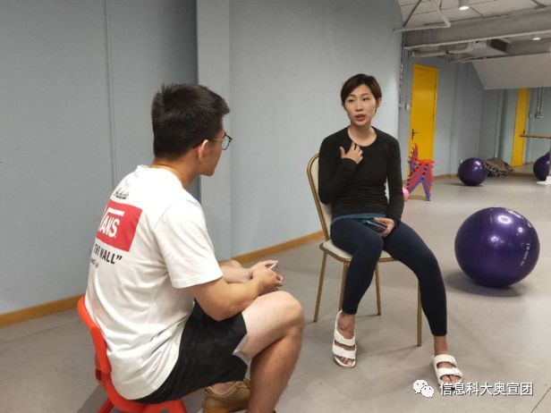
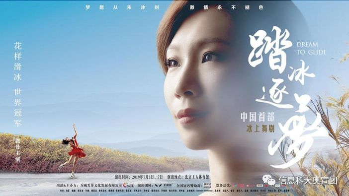

不忘初心，路就在脚下—花样滑冰世界冠军张丹老师
【来源】：信息科大奥宣团 | 2019-06-26
2019年6月25日，北京信息科技大学“青春热情融化冰雪”—冬奥精神宣讲团前往亚运村采访花样滑冰世界冠军张丹。本次采访中，张丹老师分享了宝贵的成功经验，让我们体会到花样滑冰冠军的心路历程。

张丹，出生于1985年，花样滑冰运动员，原中国花样滑冰主力队员。张丹和张昊两人从1997年开始配对参加花样滑冰双人滑比赛，共参加过3届冬奥会，2002年，年仅17岁的张丹首次代表国家参加美国盐湖城冬奥会，在2006年意大利都灵冬奥会上，张丹在抛四周失败受伤的情况下顽强地重新回到赛场完成比赛并夺得银牌，创造了当时中国花样滑冰在奥运会赛场上最好成绩，以实际行动诠释了奥运精神，令世界为之动容。2012年退役后，张丹把更多精力放在了舞台剧上，并主演了冰上舞剧《南华梦》，用这种方式来推广花样滑冰运动，致力于让更多人了解花滑，并鼓励更多年轻人体验冰上运动。 宣讲团负责人——理学院的曹灿同学和科研组的同学们围绕着冠军励志故事、冬奥文化传播等方面对张丹老师进行了采访。在采访中我们得知，张丹老师开始练习花样滑冰是源于母亲的支持，以及花样滑冰带给她的意义。同时张丹老师也向宣讲团的成员们讲述了她小时候在艰苦的环境和条件下刻苦训练的故事，让同学们懂得了坚持不懈和战胜困难的重要性。

谈到2006年都灵冬奥会的时候，张丹老师和我们分享了她当时的感受：“其实脑子里一片空白，肯定很痛苦，但为了这一刻，自己、队友和团队里的所有人准备了很多年，所以我一定要站起来，完成比赛，无论结果如何。”正是这种坚韧和执着，使张丹老师获得了银牌和当时中国花样滑冰在奥运会赛场上的最好成绩。在聆听的过程中，同学们都被张丹老师的顽强精神深深感动。 张丹老师在回忆起自己决定退役时表示：“希望自己能有更多的时间选择经历一些新鲜事物，换一种生活方式，但对于花样滑冰并没有离开，而是以另一种方式在推广。”谈到这里，张丹老师向我们介绍了今年7月，由她主演的中国首部冰上原创舞剧《踏冰逐梦》将要首演，她希望让更多的人看到花样滑冰不一样的美，从表演和欣赏角度去重新认识花样滑冰；为了传播冬奥文化，她选择用舞台剧的方式，吸引更多的人参与到冰雪运动中来，带给他们不一样的感受。 成功申奥以来，全社会都在宣传推广冬奥，如何让更多的年轻人参与进来，是当前的重点问题，张丹老师对此表达了自己的看法。她认为对于年轻人来说，只有带他们去亲身感受才能真正领会到冰雪运动的魅力。让他们先了解冬奥，启发兴趣，接下来去亲身体验，激发孩子们对冰雪运动的热爱，在运动中锻炼自己磨练意志。 张丹老师还结合自身经历，告诉同学们要勇敢地面对学习和生活中遇到的困难和挫折，她说：“无论在什么时候，放轻松是最需要做的一件事情，然后就是战胜自己，跟自己去比赛，只有专心于面临的问题时，才会变的更专注，更享受这个过程。”张老师的建议让同学们受益匪浅。

在采访过程中张丹老师一直强调：“想要成为一名优秀的运动员，首先要学会做人，在生活中亦是如此。”通过交流，我们认识了这位曾经在赛场上永不放弃的优秀运动员，更重要的是学习到了她所传递给我们的无限正能量。 采访结束后，张丹老师为冬奥精神宣讲团录制了一段助力视频，同时张老师也希望更多的人关注冰雪项目，助力2022冬奥会！ 由张丹老师主演的中国首部原创冰上舞剧《踏冰逐梦》将于2019年7月5日和7日在北京工人体育馆进行全球首演。这部冰上舞剧，以花样滑冰运动员叶遥一生的奋斗历程、家国梦想为故事主线，冠以中国文化和新时代的中国梦为背景，描绘了一个逐梦冰上的花滑人充满了挫折、励志与希望的人生故事。让我们一起为张丹老师加油喝彩！

感谢张丹老师对于冬奥精神宣讲团的大力支持。通过与花样滑冰世界冠军面对面的交流，同学们体会到了一种不一样的冠军风采，切身感受到气质与口才俱佳的张丹老师的人格魅力。在坚持梦想的道路上，从来不是一帆风顺的，有时候，换一条路，依然可以到达远方。相信张丹老师的经历会给各位追梦人带来新的启示，不忘初心，路就在脚下！
浏览量：34

- 联系
我们

工作日：
早9:00-晚18:00
杨老师：
400-888-8888